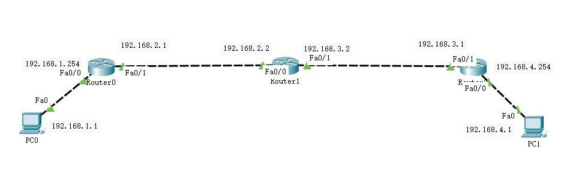
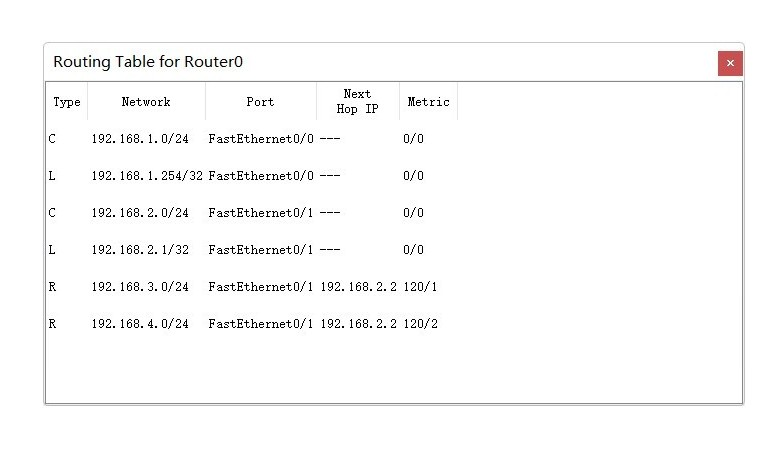
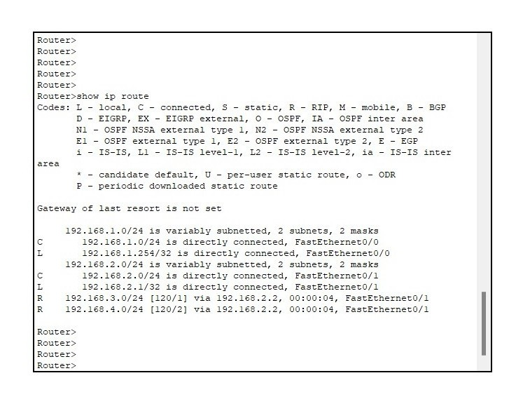
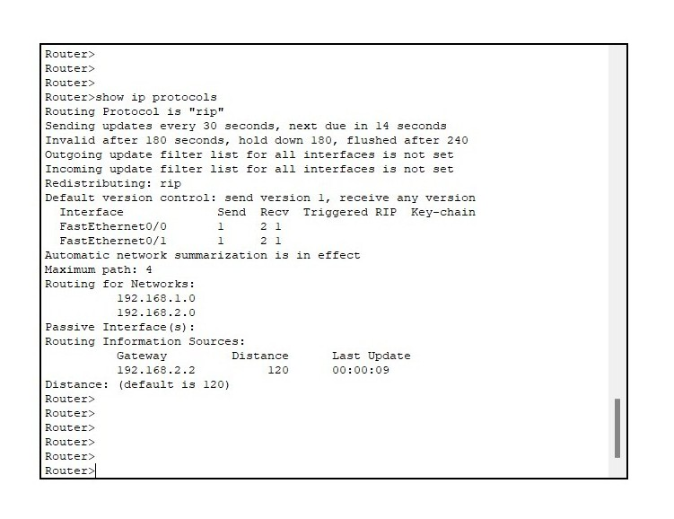
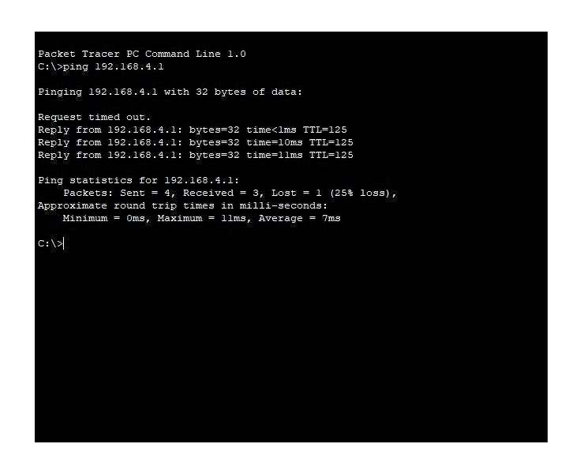

- 一、实验目的
- 了解RIP协议的基本原理
- 掌握RIP协议的配置方法
- 进一步熟悉PT的使用
- 二、实验要求
- 根据网络拓扑完成RIP的配置
- 测试网络的连通性
- 网络拓扑布局合理、标注信息清晰完整
- 关键配置有源码或截图
- 测试结果有截图
- 三、实验需求
- 3台2811路由器
- 2台PC
- 四、实验过程
- 搭建拓扑并配置各主机IP地址；确保各路由连接的是不同的网络

RIP拓扑
- 路由器0的配置
- 2.1 配置路由器端口，生成直连路由；主要配置命令参考如下：
Router(config)#interface fa0/0
Router(config-if)#ip address 192.168.1.254 255.255.255.0
Router(config-if)#no shutdown
Router(config)#interface fa0/1
Router(config-if)#ip address 192.168.2.1 255.255.255.0
Router(config-if)#no shutdown
- 2.2 配置路由器RIP协议；主要配置命令如下；
Router(config)#router rip
Router(config-router)#version 2
Router(config-router)#no auto-summary
Router(config-router)#network 192.168.1.0
Router(config-router)#network 192.168.2.0
- 3. 路由器1、路由器2的配置同路由器0
- 4. 查看各路由器的动态路由信息

PT的监视工具

Router#show ip route

Router#show ip protocols
- 5. 测试网络的连通性；

ping对方主机
- 五、实验分析
- 为什么第一次通信失败
- 再次ping对方，结果又如何
- 请发送简单PDU测试网络连通性
- 每个实验阶段的分析和异常处理
- 六、实验报告
- 根据实操部分的内容，完成RIP协议的配置和测试
- 以纸质的形式提交实验报告
- 论文格式请参照范文[点击下载]